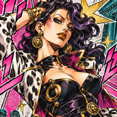
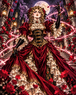
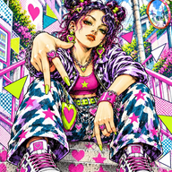
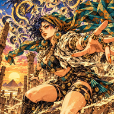

入力した内容はこの端末の中だけに保存され、どこにも送信されません。
レシート・会議の通知・手帳のページ（月間のマス目や日付ごとのメモ）を撮ると、内容を見て家計簿か書類トラッカーに振り分けます。手帳の予定は、確認してから iPhone のカレンダーに登録できます。撮影も文字の読み取りも端末の中だけで行い、外部には送りません。

冷蔵庫の在庫・賞味期限管理
書類・回覧・会議の期限トラッカー
備蓄・消耗品の管理
ポイントカードトップの背景と、機能ごとの写真を登録します。写真はこの端末の中だけに保存されます。
アイコンから起動できるようになり、電波の届かない場所でも開けます。Android の Chrome では、メニューの「アプリをインストール」から同じことができます。
版 開発版（apps/ を直接開いています）